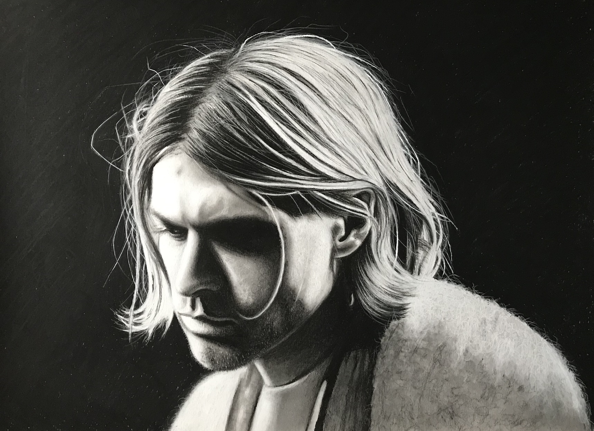
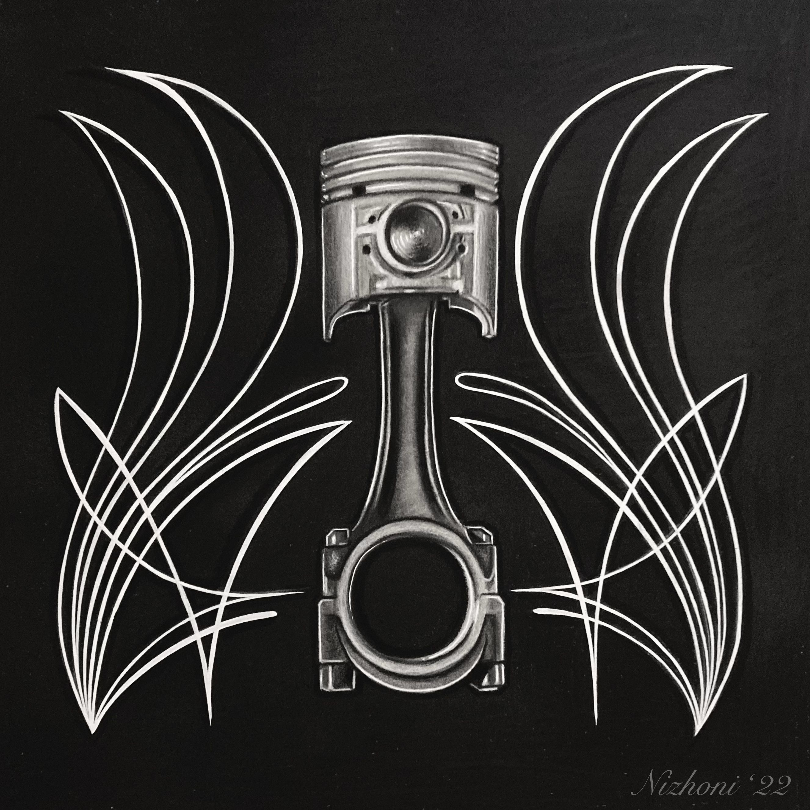
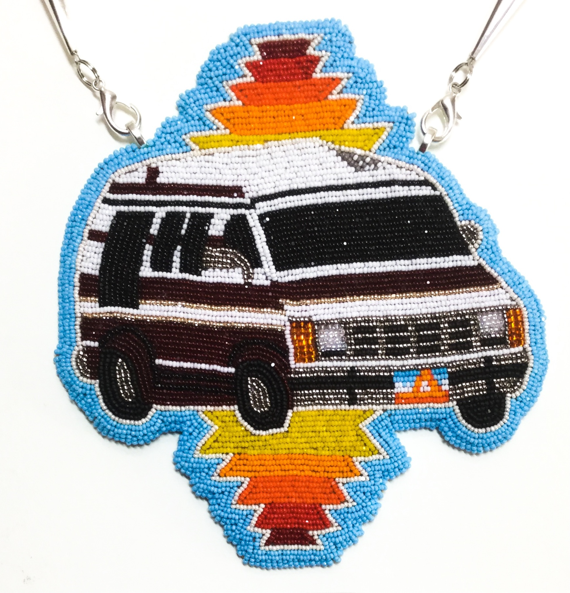
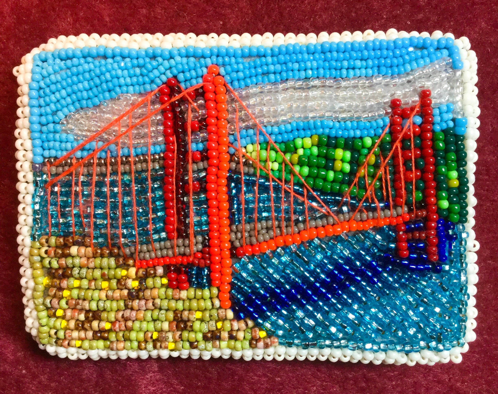

"Bowie"
18"x24", charcoal on gray toned paper, 2020

"Pump"
18"x24", charcoal and enamel paint on gray toned paper, 2022

"Cobain"
24"x18", charcoal on gray toned paper, 2020

"Piston"
12"x12", charcoal on gray toned paper, 2022

"Vanimal"
4"x6", seed beads on buckskin, 2019

"Greetings From San Francisco"
2"x3", seed beads on buckskin, 2019